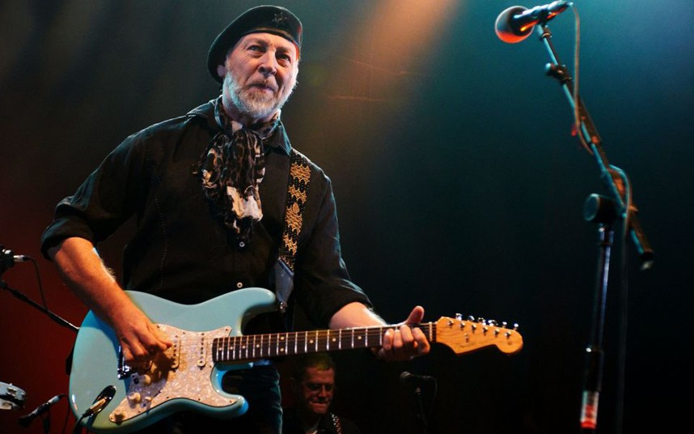
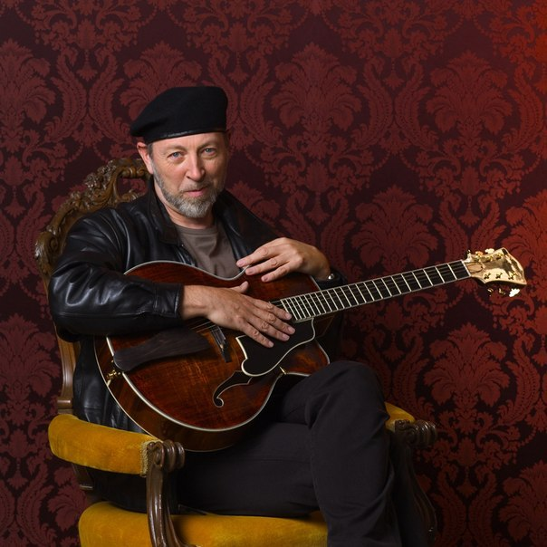

Ричард Томпсон (англ. Richard Thompson; 3 апреля 1949, Лондон, Великобритания) — британский музыкант. В 2003 году журнал Rolling Stone поместил его на 19 место в списке «100 величайших гитаристов всех времён».
С 1967 года Ричард Томпсон выступал с британскими фолк-рок группами Fairport Convention (до 1971 года), The Happy Blunderers (1971), The Bunch (1971) и Albion Country Band (1972). Принял участие в записи альбома-компиляции «Rock On», который презентовал любимцев британских рок-фанов. Произведение «When Will I Be Loved?» исполнили на этой пластинке в дуэте вокалистка Fairport Convention Сэнди Дэнни и Линда Питерс. С 1972 года вместе с женой Линдой Томпсон (англ. Linda Thompson), девичья фамилия которой Питерс (Peters) выступал в дуэте. Линда также помогла Томпсону в записи его дебютного сольного лонгплея «Henry The Human Fly», а следствием сотрудничества стал совместный альбом «I Want To See The Bright Lights Tonight», появившийся в 1974 году. Пластинка предлагала почти самые популярные композиции Ричарда, среди которых, например, была заглавными «Cavalry Cross» и пессимистическое произведение «End Of The Rainbow».
1975 года Ричард и Линда вместе с гитаристом Fairport Convention Саймоном Николом начали выступать как трио Hokey Pokey, переименованное со временем в Sour Grapes. Сначала их тексты сочетали юмор с социологическими наблюдениями. Лонгплей «Pour Down Like Silver»,
который появился как «Hokey Pokey» 1975 года, отражал увлечение Томпсона персидским мистическим суфизмом (еще в 1974 году Ричард принял ислам), который изредка оттеняли эффектные композиции.
Следующие три года оказались периодом созерцания с перерывом на выступления 1977 вместе с музыкантами из группы Mighty Baby. Переломным в карьере дуэта стал записанный в 1978 году для фирмы «Chrysalis» альбом «First Light», который часть критиков признала интересной работой супругов. Однако очередной лонгплей «Sunnyvista» очень разочаровал, хотя в него и вошли неплохое сатирическое заглавное произведение и гневный «You’re Going То Need Somebody».
Распрощавшись с «Chrysalis», Томпсон записали для фирмы «Hannibal» лонгплей «Shoot Out The Lights», который согласно журналу «Rolling Stone» оказался самым интересным альбомом 1982 года. Американское концертное турне открыло новый этап в карьере дуэта, однако в июне 1982 года Томпсон разошлись, выступив последний раз на «Sheffield’s south Yorkshire Festival». Ричард вернулся к сольной деятельности, а Линда ограничилась записью 1985 альбома «One Clear Moment».